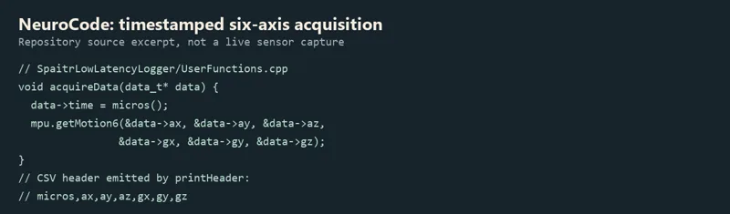

NeuroCode / early sensor experiments
IMU logging, Bluetooth transmission and button experiments.

The idea
Experiment with measuring movement and keeping it: Arduino/MPU6050 acquisition, low-latency SD logging, buttons, Bluetooth transmission and plotting. The repository's named experiments and acquisition code support these technical interests. No project statement establishes a neuroscience product or a personal learning narrative, so the name NeuroCode should not be expanded into one.
How it works
A developer selects the relevant Arduino experiment rather than launching a single finished app: raw MPU6050 reads, Bluetooth transmission, button testing or the SPAITR logger.
The logger's acquisition function timestamps the sample with micros() and reads accelerometer and gyroscope axes through getMotion6.
The logging sketch writes buffered binary data to an SD card and contains conversion/export support. UserFunctions emits a CSV header for micros, ax/ay/az and gx/gy/gz.
Actual collection requires the matching board, wiring, sensor, SD hardware and libraries. No device was attached or data collection performed here; archived participant data was excluded.
Inside the build
Arduino/C++ sensor experiments
MPU6050_raw, baseGyroCode, buttonTesting and Bluetooth_transmition_test are separate sketches. The SPAITR-specific acquisition function reads six axes and prints timestamped records.
Buffered SD recording
The low-latency logger uses SdFat, block/buffer configuration and binary-to-CSV flow. Its header explicitly describes example logger behavior; those inherited example performance figures are not Joey's measured results.
Existing libraries and examples
I2Cdev/MPU6050 and generic logger scaffolding are third-party/example components. The story should distinguish adaptation/configuration and sensor wiring from creating those libraries.
What I learned
Go from a sensor register to a record
Source-supported topic: sampling raw acceleration/gyro axes, choosing ranges and keeping timestamps alongside the values.
Handle storage latency
Buffered logger code exposes timing, overrun and SD-write constraints. It is a useful early experiment story without claiming the example's published maximum rates as achieved performance.
Adapt rather than erase provenance
Mixed example/library code makes this a learning/adaptation archive entry. Joey-authored commits and user-confirmed jan1024 commits support contributions; inherited components remain separately attributed.